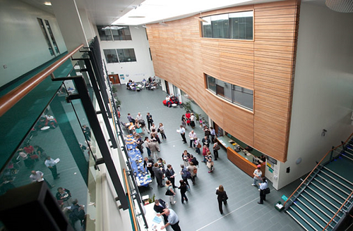

Academic Information
• Faculties- Links to all the Faculty and Departmental Offices with information on staff, courses and events.
• A to Z List of Departments - Departmental Homepages.
• Library and Learning Resource Services - Information on LLRS services, access to the on-line catalogue, links to external academic resources and guides to using IT to support your studies.
• Our Academic Partners - Information on College links.
• Research - links to the Research Centres, guide to research opportunities and help on finding research funding.
Administrative Support
• Academic Registry - Information provided by the Academic Registry, including Academic Calendars, Academic Regulations, Module Catalogue, information on award ceremonies and tuition fees.
• Student Guide to Regulations - General and Academic Regulations, World Wide Web Code of Practice, Rules Governing the Use of LLRS facilities.
Student Services
• Advisory and Counselling Centre - academic advice, help for international students, careers guidance, personal counselling, student loans and access funds and support for students with disabilities/learning difficulties.
• Health Centre - guide to the services provided by the University Health Centre.
• Multi-Faith Centre - information regarding the work of the Multi-Faith Centre.
• Pre-School Centre - contact information regarding the University's child care facilities.
• Sports Centre - booking arrangements and facilities.
University Services
• Catering Services - guide to the catering facilities on campus.
• Printing Services - information regarding services provided for students.
• Student Accommodation Services - guide to University Accommodation and help on finding accommodation in the private sector.
Life at the University
• Arts Centre - what's on at the University's arts venues.

• Students' Union - events and services provided by the Students' Union.
• University Guide - a full guide to life at the University.
• Campus Navigator - help with finding your way around campus.

Communications
• Noticeboards - General, Classified, Events and Alumni noticeboards.
• Student Email Search - database of student email addresses.
• Staff Search - database of staff email addresses.
• A to Z List of Services - full A to Z list of University Services.